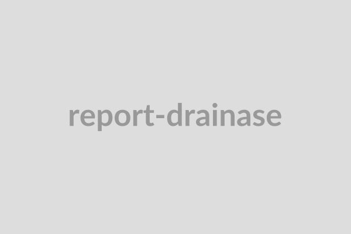

Sangat Mendesak
Lubang Jalan Kedalaman 15cm — Jl. Sudirman
Ditemukan kerusakan struktur jalan yang cukup parah setelah hujan deras...
Ditemukan kerusakan struktur jalan yang cukup parah setelah hujan deras...

SedangPenyumbatan di titik temu pipa drainase utama. Petugas sudah dijadwalkan...
Lampu yang dilaporkan padam di area taman kota telah diganti dengan unit...